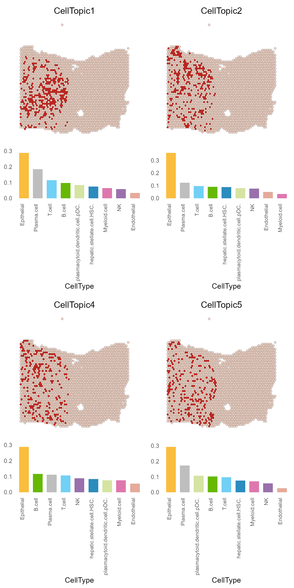

SpaTopic
Load data
library(Seurat)
library(SpaTopic)
library(ggplot2)
library(ggforce)
library(cowplot)
library(tidyverse)
library(pheatmap)
my_colors <- c("#66b803", "#E5AA9B", "#FABD3E", "#2B8CBE", "#DE77AE", "#9970AB", "gray", "#D5E4A2", "#71D0F5", "#B1746F", "#ADE2D0", "#20DE8BFF", "#CCDE8BFF", "#FFDE8BFF", "#FFA88BFF", "#FF6A8BFF")
load("vignette_data/HCC_1L_obj.rda")
load("vignette_data/HCC_1L_spot_celltype.rda")cluster
Here we use the clustering method ‘Seurat’, parameters are as
follows, the data has been processed by SCTransform.
HCC_1L_obj <- RunPCA(HCC_1L_obj, assay = "SCT", verbose = FALSE)
HCC_1L_obj <- FindNeighbors(HCC_1L_obj, reduction = "pca", dims = 1:30)
HCC_1L_obj <- FindClusters(HCC_1L_obj, resolution = 1.5)
Modularity Optimizer version 1.3.0 by Ludo Waltman and Nees Jan van Eck
Number of nodes: 2791
Number of edges: 103726
Running Louvain algorithm...
Maximum modularity in 10 random starts: 0.7420
Number of communities: 16
Elapsed time: 0 seconds
HCC_1L_obj <- RunUMAP(HCC_1L_obj, reduction = "pca", dims = 1:30)CellTopic
HCC_1L_spot_clusters <- HCC_1L_obj@meta.data["seurat_clusters"]
result_list <- CellTopic(
HCC_1L_spot_celltype,
HCC_1L_spot_clusters,
cluster = "seurat_clusters",
num_topics = 10,
percent = 0.7
)
HCC_1L_obj <- AddMetaData(HCC_1L_obj, result_list[["CellTopic"]])
SpatialDimPlot(HCC_1L_obj, group.by = "CellTopic", image.alpha = 0, pt.size.factor = 2.2) + scale_fill_manual(values = my_colors)
SpatialDimPlot(HCC_1L_obj, alpha = 0) + theme(legend.position = "none")

Special spatial domain
SpaTopic can combine cell types and spatial location of CellTopics to analyze certain specialized spatial tissue structures in cancer, such as Tertiary Lymphoid Structures (TLSs) and tumor boundary.
We can see that the slice is divided into 15 CellTopics, of which CellTopics 1, 2, 4, and 5 belong to the cancer regions, and their main cell types are epithelial cells.
CellTopic_plot(HCC_1L_obj,
celltype_topic = result_list[["celltype_topic"]],
celltopic = paste0("CellTopic", c(1,2,4,5)),
cols.highlight = c("#DE2D26", "#FEE0D2"),
cols.celltype = my_colors,
pt.size.factor = 2.2)
CellTopic8 mainly represents the tumor boundary, and its major cell types include fibroblast cells, pDC cells and B cells.
CellTopic_plot(HCC_1L_obj,
celltype_topic = result_list[["celltype_topic"]],
celltopic = "CellTopic8",
cols.highlight = c("#DE2D26", "#FEE0D2"),
cols.celltype = my_colors,
pt.size.factor = 2.2)
Additionally, CellTopic 7 is found in the paraneoplastic region, predominantly consisting of plasmacytoid dendritic cells (pDCs), B cells, and myeloid cells.
On the right, we observe the scoring for spots using the “TLS50” gene set, which is considered to be the gene signature for the identification of TLSs.
CellTopic_plot(HCC_1L_obj,
celltype_topic = result_list[["celltype_topic"]],
celltopic = "CellTopic7",
cols.highlight = c("#DE2D26", "#FEE0D2"),
cols.celltype = my_colors,
highlight.circle = "isTLS",
pt.size.factor = 2.2)
SpatialFeaturePlot(HCC_1L_obj, features = "scores", pt.size.factor = 2.2, image.alpha = 0) + ggtitle("TLS50")

Meta analysis
Load data
Presented here is a meta-analysis of the CellTopic-celltypes data derived from four primary colorectal cancer cases as well as two corresponding metastatic liver cancer instances.
load("vignette_data/Meta_CellTopic.rda")
Meta_CellTopic[1:5,1:5]
C1_CellTopic1 C1_CellTopic2 C1_CellTopic3 C1_CellTopic4
T01_cycling_TNK 0.01354725 0.022351251 0.022554421 0.017575393
B07_plasma_PPIB 0.02185837 0.018740898 0.018035048 0.006827589
M02_Mac_CXCL9 0.02372333 0.006066737 0.008488789 0.009032274
M08_cycling_MKI67 0.01309684 0.013551056 0.022641684 0.016111530
B04_plasma_IGHG2 0.03035225 0.009415768 0.005488518 0.008393596
C1_CellTopic5
T01_cycling_TNK 0.016782494
B07_plasma_PPIB 0.023410894
M02_Mac_CXCL9 0.006921123
M08_cycling_MKI67 0.022835434
B04_plasma_IGHG2 0.024964639Initially, we calculate the correlation among the CellTopics. Based on the complete clustering outcomes, we identify CellTopics that comprise similar cell types and subsequently define these clusters as MetaTopics.
corr <- round(cor(Meta_CellTopic), 3)
p <- pheatmap(corr,
border_color = "black",
scale = "none",
cluster_rows = T,
cluster_cols = T,
legend = TRUE,
show_rownames = T,
show_colnames = T,
fontsize = 8,
cutree_rows = 7,
cutree_cols = 7
) Utilizing the Wilcoxon test, we discerned the cell types that exhibit
high expression for each MetaTopic. The heatmap below displays the mean
expression of each cell type within each MetaTopic, with the p-values
indicating the significance of the differences in expression levels.
Utilizing the Wilcoxon test, we discerned the cell types that exhibit
high expression for each MetaTopic. The heatmap below displays the mean
expression of each cell type within each MetaTopic, with the p-values
indicating the significance of the differences in expression levels.
library(reshape2)
Attaching package: 'reshape2'
The following object is masked from 'package:tidyr':
smiths
row_cluster <- cutree(p$tree_row,k=7) %>% as.data.frame()
colnames(row_cluster) <- "cluster"
row_cluster$cluster <- paste0("M", row_cluster$cluster)
row_cluster$sample <- gsub("_.*", "", rownames(row_cluster))
Meta_CellTopic_cluster <- merge(as.data.frame(t(Meta_CellTopic)), row_cluster, by = 0)
Meta_CellTopic_cluster_long <- melt(Meta_CellTopic_cluster, id.vars = c("cluster", "Row.names", "sample"))
colnames(Meta_CellTopic_cluster_long) <- c("cluster", "CellTopic", "sample", "celltype_min", "value")
Meta_CellTopic_cluster_long$CellTopic <- as.character(Meta_CellTopic_cluster_long$CellTopic)
Meta_CellTopic_cluster_long$celltype_min <- as.character(Meta_CellTopic_cluster_long$celltype_min)df <- Meta_CellTopic_cluster_long %>%
group_by(cluster, celltype_min) %>%
summarise(mean = mean(value, na.rm=T)) %>%
spread(celltype_min, mean) %>%
column_to_rownames(var = "cluster")
[1m
[22m`summarise()` has grouped output by 'cluster'. You can override using the
`.groups` argument.
df_p <- unique(Meta_CellTopic_cluster_long$celltype_min) %>% as.data.frame() %>% column_to_rownames(var = ".")
ct_n <- 1
for(ct in unique(Meta_CellTopic_cluster_long$celltype_min)){
all <- Meta_CellTopic_cluster_long %>% subset(celltype_min == ct)
cls_n <- 1
for(cls in unique(Meta_CellTopic_cluster_long$cluster)){
select <- Meta_CellTopic_cluster_long %>% subset(celltype_min == ct & cluster == cls)
p <- wilcox.test(select$value, all$value, alternative = "greater")
p <- p$p.value
df_p[ct_n,cls_n] <- p
cls_n <- cls_n + 1
}
ct_n <- ct_n + 1
}
colnames(df_p) <- unique(Meta_CellTopic_cluster_long$cluster)
df_pp <- df_p %>% t()
df_pp_cluster <- apply(df_pp, 2, function(x){ifelse(min(x) <= 0.05, return(which.min(x)), return("none"))}) %>%
as.data.frame()
df_pp_cluster_name <- rownames(df_pp_cluster)[order(df_pp_cluster$.)]
df_pp <- df_pp[,df_pp_cluster_name]
df_pp_cluster <- apply(df_pp, 2, function(x){ifelse(min(x) <= 0.05, return(which.min(x)), return("none"))}) %>%
as.data.frame()
df_pp_cluster$. <- as.character(df_pp_cluster$.)
colnames(df_pp_cluster) <- "high in MetaTopics"
df_pp_cluster$`high in MetaTopics`
[1] "1" "1" "1" "1" "1" "1" "1" "1" "1" "2"
[11] "2" "2" "2" "2" "2" "2" "3" "3" "3" "3"
[21] "3" "4" "4" "4" "4" "5" "5" "5" "5" "5"
[31] "5" "5" "5" "5" "6" "6" "6" "6" "6" "6"
[41] "6" "6" "6" "6" "6" "7" "7" "7" "7" "7"
[51] "7" "7" "7" "7" "7" "7" "none" "none" "none" "none"
[61] "none" "none" "none" "none"
mycolor <- c("#f94144", "#f8961e", "#f7f31c", "#77bb43", "#429f9c", "#3574b8", "#bb3892", "grey")
names(mycolor) <- c("1", "2", "3", "4", "5", "6", "7", "none")
df[,df_pp_cluster_name] %>% t() %>%
pheatmap(border_color = "black", scale = "none", legend = TRUE,
cellwidth = 15, cellheight = 15,
cluster_rows = F, cluster_cols = F,
show_rownames = T, show_colnames = T,
fontsize = 8, fontsize_number = 9, number_color = "black",
display_numbers = t(matrix(ifelse(df_pp <= 0.05, ifelse(df_pp <= 0.01, "***", "*"), ""), nrow(df_pp))),
gaps_row = c(9,16,21,25,34,45,56),
annotation_row = df_pp_cluster,
annotation_colors = list(`high in MetaTopics` = mycolor),
angle_col = 90
)Cell-Cell communication
We can delve deeper into the complexities of the tumor microenvironment by analyzing the communication among different CellTopics. Employ the CellChat tool to elucidate the dynamics of cell communication across spatial domains.
load data
data("spot_celltype")
data("spot_clusters")
load("vignette_data/PDAC_obj.rda")
result_list <- CellTopic(spot_celltype, spot_clusters, cluster = "spatial.cluster", num_topics = 13)
PDAC_obj <- AddMetaData(PDAC_obj, result_list[["CellTopic"]])library(CellChat)
# Create cellchat object
data.input <- GetAssayData(PDAC_obj, assay = "Spatial", slot = "data")
identity = data.frame(group =PDAC_obj$CellTopic, row.names = names(PDAC_obj$CellTopic))
cellchat <- createCellChat(object = data.input, meta = identity, group.by = "group")
[1] "Create a CellChat object from a data matrix"
Set cell identities for the new CellChat object
The cell groups used for CellChat analysis are CellTopic1 CellTopic2 CellTopic3 CellTopic4
# Selective ligand receptor database
cellchat@DB <- CellChatDB.human
cellchat <- subsetData(cellchat)
# Calculation
cellchat <- identifyOverExpressedGenes(cellchat)
cellchat <- identifyOverExpressedInteractions(cellchat)
cellchat <- projectData(cellchat, PPI.human)
#cellchat <- filterCommunication(cellchat, min.cells = 10) # Do not filter spot
cellchat <- computeCommunProb(cellchat, raw.use = FALSE, population.size = TRUE)
triMean is used for calculating the average gene expression per cell group.
[1] ">>> Run CellChat on sc/snRNA-seq data <<< [2024-03-05 23:53:19.438885]"
[1] ">>> CellChat inference is done. Parameter values are stored in `object@options$parameter` <<< [2024-03-05 23:54:04.21858]"
cellchat <- computeCommunProbPathway(cellchat)
df.net <- subsetCommunication(cellchat)Communication between different spatial domains from the perspective of pathway.
df.netp <- subsetCommunication(cellchat, slot.name = "netP")
df.netp$sTot <- paste0(df.netp$source, " -> ", df.netp$target)
df.netp <- subset(df.netp, sTot %in% c("CellTopic1 -> CellTopic1","CellTopic1 -> CellTopic2","CellTopic1 -> CellTopic3","CellTopic1 -> CellTopic4","CellTopic2 -> CellTopic1","CellTopic3 -> CellTopic1","CellTopic4 -> CellTopic1","CellTopic2 -> CellTopic4","CellTopic4 -> CellTopic2","CellTopic2 -> CellTopic2","CellTopic3 -> CellTopic3","CellTopic4 -> CellTopic4"))
df.netp$sTot <- factor(df.netp$sTot,levels = c("CellTopic2 -> CellTopic4","CellTopic4 -> CellTopic2","CellTopic1 -> CellTopic2","CellTopic2 -> CellTopic1","CellTopic1 -> CellTopic3","CellTopic3 -> CellTopic1","CellTopic1 -> CellTopic4","CellTopic4 -> CellTopic1","CellTopic1 -> CellTopic1","CellTopic2 -> CellTopic2","CellTopic3 -> CellTopic3","CellTopic4 -> CellTopic4"))
df.netp <- rbind(df.netp, data.frame(
source = c(NA,NA,NA),
target = c(NA,NA,NA),
pathway_name = c("VTN","VTN","VTN"), # It's just for showing the parts without communication, "VTN" has no particularity.
prob = c(0,0,0),
pval = c(NA,NA,NA),
sTot = c("CellTopic1 -> CellTopic2","CellTopic2 -> CellTopic1","CellTopic3 -> CellTopic1")))
library('RColorBrewer')
ggplot(df.netp, aes(x=sTot, y=pathway_name)) +
geom_point(aes(size=pval, color=log10(prob))) +
scale_size(range = c(4, 2), breaks = c(0.01,max(df.netp$pval[!is.na(df.netp$pval)])), labels = c("p<0.01","0.01<p<0.05")) +
scale_colour_distiller(palette="Spectral", labels = c("low","high"), breaks = c(log10(min(df.netp$prob[df.netp$prob!=0])),log10(max(df.netp$prob)))) +
theme_bw() +
theme(axis.text.x = element_text(angle = 90, hjust = 1, vjust = 0.5),
axis.title.x = element_blank(),
axis.title.y = element_blank()) +
labs(size = "p-value", color = "Commun.prob")